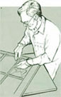
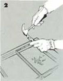
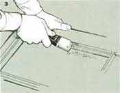
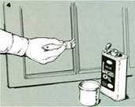
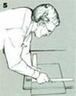
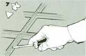
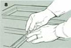
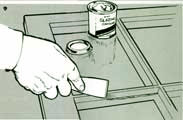
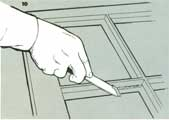

Shop Short Replacing A Window Pane
By Clarence Goosen
January/February 1988
SHOP SHORT
Taking a clear look at glazing repair.
ILLUSTRATIONS BY: CLARENCE GOOSEN
|
 1 ) If the glass is shattered, use heavy leather gloves and remove the remaining shards. If the pane is cracked but intact, leave it in place until you've removed the glazing compound from around it. |
 2) With a sharp wood chisel, remove the old glazing compound. The putty may be difficult to chip away, but it must be removed to expose the wood. Take care not to cut into the wood frame. |
 3) Remove the triangular glazier's points and any remaining glass or debris from the frame. Then, sand or scrape the groove clean. |
|
 4) Apply a coat of linseed oil or primer paint to the groove of the frame. This prevents the oil in the glazing compound from soaking into the wood and drying the compound prematurely. |
 5) Cut a new pane of glass slightly smaller than the frame opening. You can make a glass-cutting jig by attaching a strip of hardwood to a plywood sheet. Use it by positioning the glass and a rafter square against the strip; make a single stroke against one leg of the square with the glass cutter, then move the scored line to the edge of the plywood and tap the line to break the glass cleanly. |
 6) With clean hands, thoroughly knead some glazing compound into a workable consistency, then apply a 1/16""-thin layer along the groove with a putty knife. This is to give the glass a cushion against stress and irregularities in the frame. |
|
 7 Set the new pane into the frame and press the glass to seat it against the glazing compound. Using your fingers, place metal glazier's points into the frame about 6"" apart, tight against the glass. Use a screwdriver to push each point halfway into the wood. |
 8 Work some glazing compound into a thin rope about the size of a pencil. Lay it into the groove along the edges of the glass and press it down with your fingers to fill the angle between the glass and the frame. |
 9 Use a clean putty knife and draw it over the glazing compound at a shallow angle to form a bevel between the wood sash and the glass. Pull the knife toward you, making a single stroke from one corner of the frame to the other.(Dipping the blade in linseed oil helps to maintain a smooth surface.) |
|
 10 Remove any excess putty with the knife or a single-edge razor blade and let the freshly applied glazing cure for a week or so. You can then paint it to protect the compound. |
|
|